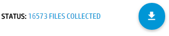
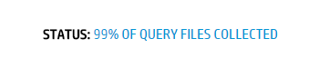

From the drop-down menu choose the document type you want to look for - Active, Inactive, Non-Record, Unspecified, or All Documents.
Select the sub-sites you wish to scan. Again, you can choose certain sub-sites or go throght all of them.

Start the scan by pressing the button. On your bottom left you get a status box, where you can follow the progress.

Once it's done, the total number of files collected will appear in the status box. Above it you can see the files numbers, separated in categories by document type.

Once scanning is completed, the download button will be activated in your bottom right corner. By pressing it, you will get the collected data in an excell file. Note, that the default size of the excel file is 50 000 items. You can increase it up to 200 000 in the Preferences window.

If you notice that the status progress has not changed for more than few minutes, that there are file(s) with bad metadata, which is stopping the files collection. The solution is to find the subsites containing these file(s) and exclude them from the report.
